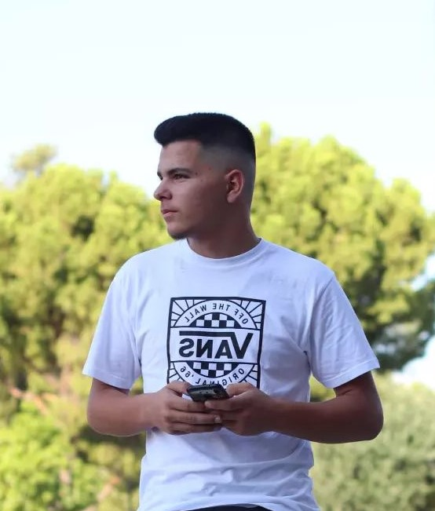

Photography
helps people to see
From inspiring people's stories to impactful messages, I create head-turning photograph that does the right thing in the right place, at the right time to unlock the possibility.

About Chrystam
Photographer and creator based in Athens, Greece. Being perceptive to the small details of the everyday, my work revolves around floating moments and allegorical scenes. Nature, memory, and family are notions that interest me in a symbolic form and their narrative power.
Moreoverm my humanist approach and idealisation of women set me apart from the other photographers, as my privilefes are the soul and the personality.